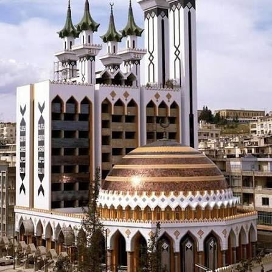
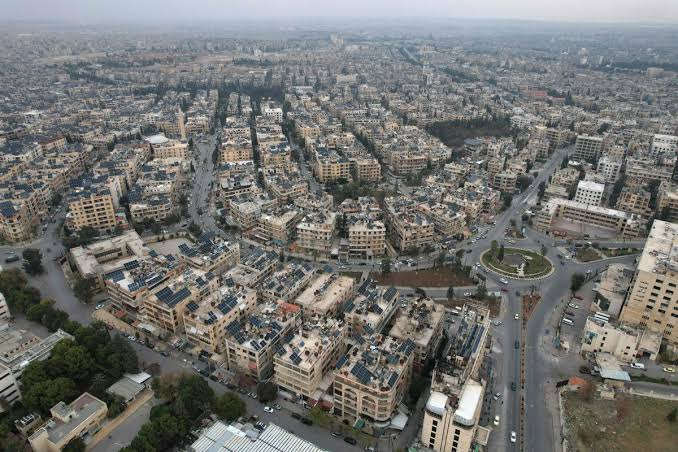

Localização
Alepo fica no noroeste da Síria, no continente asiático, perto da fronteira com a Turquia. A cidade situa-se num planalto e é atravessada pelo rio Quweiq.



Alepo fica no noroeste da Síria, no continente asiático, perto da fronteira com a Turquia. A cidade situa-se num planalto e é atravessada pelo rio Quweiq.